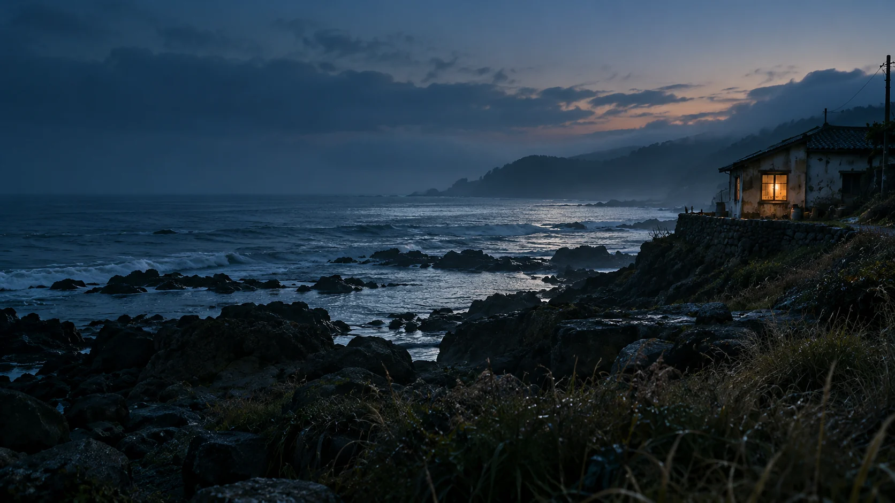

오늘의 끝에, 오래 남을 한 장면.
돌아온 바닷가, 끝내 전하지 못한 말.
드라마 · 24분 · 잔잔한 여운
THE SCREENING ROOM
전체 6편
마음에 남는 작품을 찜해보세요.
이 브라우저에 저장된 작품입니다.
가상 작품 · 실제 영상 재생 없음
PORTFOLIO CONCEPT
가상 영화 6편으로 만든 탐색 UI 콘셉트입니다.
이미지는 새로 생성한 AI 장면입니다. 기존 영화 포스터와 배우 사진은 사용하지 않았습니다.
회원가입·로그인·영상 재생·결제 기능은 제공하지 않습니다. 계정과 비밀번호를 수집하지 않습니다.